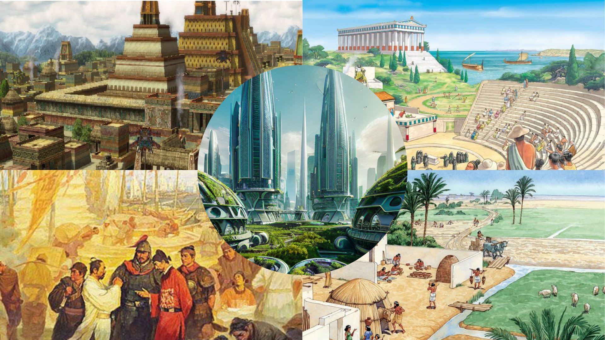
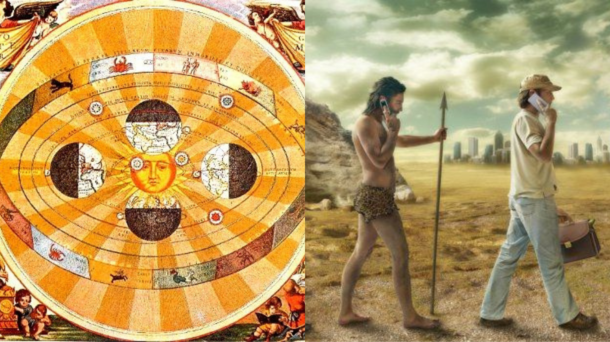
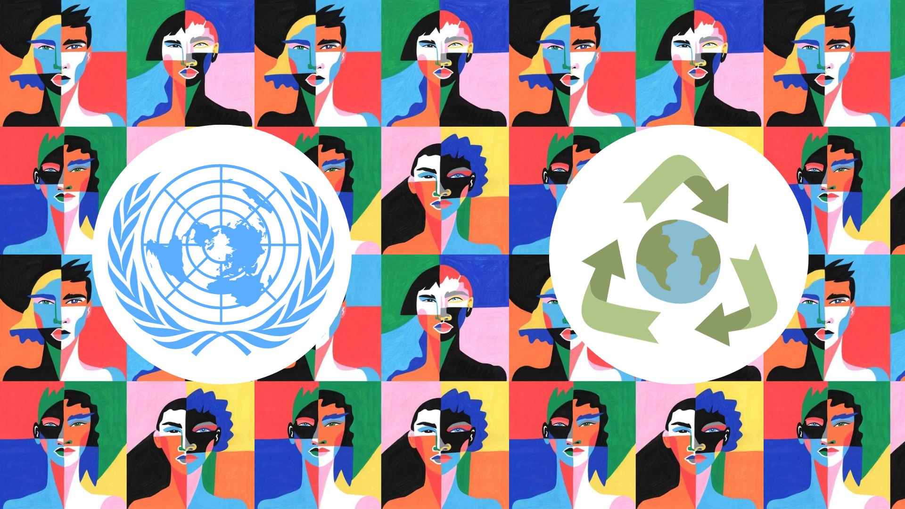
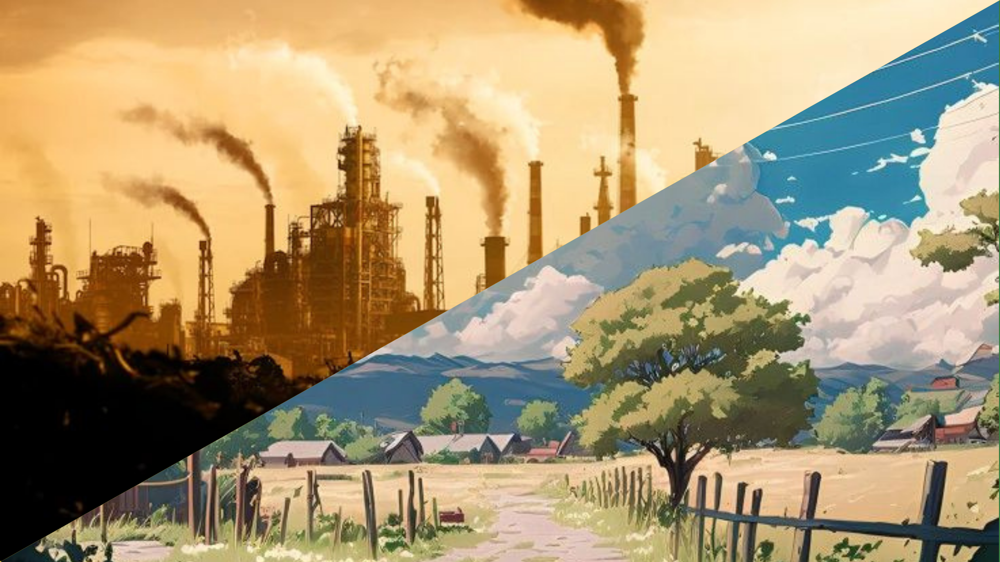
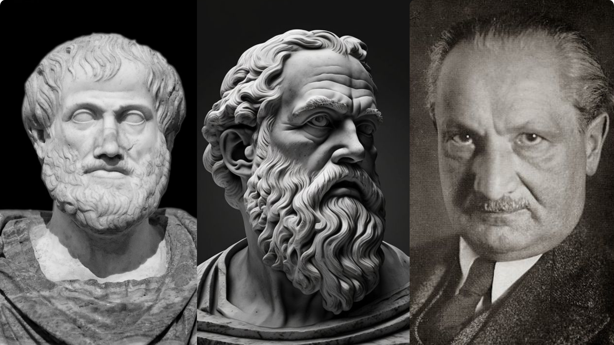

We time traveled back to the past to trace back the evolution of Science and Technology from the Ancient Period up to the Modern Day Period in Module 1. We have witnessed the foundation of Civilizations, such as the Greek, Roman, and Chinese civilizations, and the development of technologies that has opened doors to new frontiers of knowledge and innovation. Moreover, Filipino inventors were also showcased in this module, underscoring the rich contributions and ingenuity of individuals who have played pivotal roles in shaping the landscape of science and technology, not only globally but also within the context of the Philippines. Their innovations serve as a testament to the interconnected and global nature of advancements, demonstrating that the journey of discovery transcends geographical boundaries and enriches the global narrative of human progress. Module 1 provided a captivating journey through the annals of history, unveiling the intellectual achievements and technological strides that laid the groundwork for the diverse tapestry of civilizations we recognize today in our society.
Concepts
Module 1: A Historical Odyssey—Tracing the Evolution of Science and Technology Through the Years
Module 2: Impacts of Intellectual Revolutions in the Society
Module 2 traverses through the pivotal historical periods that were marked by paradigm shifts. It tackles revolutionary ideas in natural science, specifically in astronomy, and biology, challenging prevailing scientific beliefs of the time. Copernicus, with his heliocentric model and Darwin's theory of evolution each transformed society in distinct ways. Copernicus altered our cosmic perspective, engraving heliocentrism and challenging geocentrism. Darwin's theory revolutionized biology, reshaping our understanding of the origins of life and the evolution of man. As a student, these concepts provided a profound appreciation for the dynamic nature of knowledge, encouraging critical thinking and curiosity. As a member of society, they underscore the importance of adapting to evolving ideas and embracing the transformative power of intellectual revolutions in shaping collective understanding.
Module 3: Exploring Diversity in the society and the UN Sustainable Goals
The subjectivity of diversity was discussed in this module, and as well as its implications in the UN Sustainable Goals and Ambisyon Natin 2040. Diversity is a multifaceted concept, as it is perceived based on one’s perspective and experiences. Moreover, the significance of diversity evolves within different societal and cultural contexts, shaping the interpretation of individuals towards reality. Additionally, the United Nations' Sustainable Development Goals and the Ambisyon Natin 2040 promote inclusivity through various programs designed to foster a more just and sustainable future in both local and global scale. These initiatives aim to address diverse challenges, ranging from poverty and hunger to education and environmental sustainability, in order to create a more inclusive and peaceful world. Acknowledging this subjectivity is essential for fostering inclusive conversations that promote understanding and open-mindedness to our society.
Module 4 and 5: Unveiling the Dynamics of Biodiversity and Environmental Issues
The exploration of biodiversity and the interconnectedness between various environments in this module unveils the intricate web of life that has shaped the planet Earth. Life, in all its diversity, is not isolated to one particular environment but is rather sustained through the collaborative efforts of different ecosystems. These environments work synergistically, each playing a crucial role in providing the necessary conditions for the survival and thriving of various species. Whether it's the interplay between terrestrial and aquatic ecosystems, the delicate balance of predator-prey relationships, or the symbiotic associations among different organisms, the interconnectedness of environments illustrates the remarkable complexity and resilience of Earth's biosphere. This comprehensive perspective emphasizes the interdependence of life forms and underscores the importance of preserving the health and equilibrium of our planet's diverse ecosystems for the well-being of all living organisms. As a student, this newfound understanding has translated into conscious actions aimed at minimizing the detrimental impacts of pollution and other human-induced factors on our environment. As a responsible member of society, I am committed to actively contributing to the preservation of our planet's vitality for present and future generations.
Module 6: Enabling Human Flourishing in the Modern Age of Science and Technology
Philosophical concepts about human flourishing and the essence of technology were introduced in this module. Greek philosophers Plato and Aristotle believe that Eudaimonia is attained through living a virtuous life. Human flourishing in modern day definition involves the physical, social, emotional, and intellectual aspect of a person. In the context of Science and technology, flourishing involves the understanding of both theoretical and practical applications. Furthermore, Martin Heidegger's unique perspective on technology introduces the concept of "enframing," where he critiques modern technology for reducing the world to a standing reserve, emphasizing the importance of reflecting on the impact of technology on our understanding of being and the world. As a student who pursues a technology-related career, these insights from various philosophers encourages me to think critically about how I utilize technology. These concepts enlightened my understanding of how ethical considerations play a vital role in the advancement of technology. These insights inspire a commitment to responsible and thoughtful technological advancements, aligning my academic pursuits with a broader societal responsibility for the ethical use of technology.
Personal Reflection
At first, I anticipated topics that are more on the computational and practical aspect of science, technology, and society. However, that expectation changed when the first topic was introduced, as it was more of like a Social Studies subject wherein civilizations were also discussed, but the difference was this subject focused only on the advancement of technology in the different aspects of science and society. Some modules served as nostalgic 'refreshers,' echoing lessons from my high school days, while others introduced entirely new concepts—like the intriguing notions of human flourishing and Martin Heidegger’s exploration of the essence of technology. The diversity of topics challenged and expanded my understanding. I think that the key takeaway that I have gained from this course is that: We should be more aware of how we utilize technology, as it could also bring us more harm than good. We should maximize the benefits that technologies offer us and also minimize the possible negative effects it may bring to our environment and society. In the end, we humans have the rationality to either make the world a better or a worse place for us to thrive.